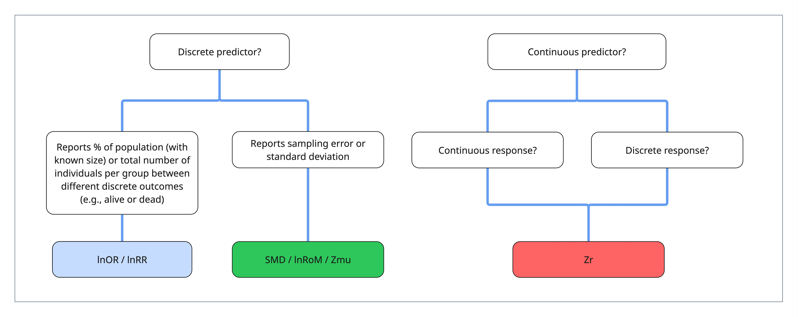

rm(list = ls())
if(!requireNamespace("metatools")) {
pak::pak("ejlundgren/metatools")
}
library("metatools")
library("ggplot2")
library("data.table")
library("ggpattern")
library("patchwork")
library("metafor")
library("dplyr")
library("broom")
library("broom.mixed")
library("simplermarkdown")
library("crayon")An overview of effect sizes
Estimates, estimators, and estimands, oh my!
A brief introduction to effect sizes and sampling variance
Effect sizes in meta-analysis are statistics calculated from the results of empirical research that report the variables of interest and, if the effect size is standardized, allow meta-analytic comparison across different studies even if the articles collected data with different units. The effect sizes we’ll discuss in this tutorial concern relationships between 2 variables, however there are other effect sizes for describing univariate results, such as single-group means and proportions, which we briefly cover here and in the escalc cheatsheet.
Effect sizes are also known as ‘point estimates’—e.g., the central tendency of a relationship of interest.
Every meta-analytic effect size is associated with sampling variance. Sampling variance describes the estimated variability around the effect size point estimate and is used as a weight in meta-analytic models. Sampling variance is calculated from the sample size and/or the standard deviation of the source data.
CONCEPTUAL FIGURE??
Effect size types
We’ll here commit the majority of this tutorial to effect sizes that are concerned with the difference in central tendencies (e.g., means) of a response variable in relation to categorical or continuous predictor variables.
There are other effect sizes for other types of questions, such as estimating differences in heterogeneity between two groups [lnCVR, (Nakagawa et al. 2015)], difference in magnitude regardless of direction [lnM, (Nakagawa et al. 2026a)], and heterozygosity in population genetics [HWE, (Wellek et al. 2010)].
These, alongside other, effect sizes for single-group descriptive statistics are described in the appendix. There are also methods for creating custom effect sizes which are covered in a separate tutorial (Nakagawa et al. 2026b) and are discussed below.
We here focus the majority of this tutorial on the mathematical assumptions, alternative formulations of, and extraction challenges of the 3 most popular effect size types in ecology and evolution ((REF?)):
standardized mean difference (SMD) and log-transformed ratio of means (lnRoM)
log odds ratio (lnOR) and log risk ratio (lnRR)
correlation coefficient (Zr)
Better names for each category?
These three effect size classes are determined by the types of data involved in your research question. In particular, whether the response and predictors variables are continuous or discrete.

When the predictor is discrete, for instance between a control and experimental treatment with a continuous response variable, then the effect size is Standardized Mean Difference (SMD) or the log-transformed ratio of means (lnRoM). —which differ in their interpretability and mathematical assumptions. Note that many refer to lnRoM as lnRR (the log response ratio). However, lnRR is also the abbreviation for the log risk ratio (see below). These effect sizes differ in their interpretability and mathematical assumptions, which we cover here.
If the predictor is discrete (control versus treatment) and the response is a binary outcome, e.g., the number or percent of nests that fledged, then we analyze the data as log odds ratio (lnOR) or the log risk ratio (lnRR). These types of effect size can also be used for presence/absence data between two conditions. For example, the presence or absence of a rare bird species on islands with and without introduced predators, where the number of islands in each category (with vs without predator and with vs without bird species) become the discrete outcome.
The correlation between continuous predictors and continuous responses are analyzed as r-t-z-transformed corrleation coefficients (Zr) effect sizes. Zr can also be calculated for responses with a continuous predictor and discrete (e.g., 0 or 1) response.
Finally, it is also possible to convert between these main effect size types, which we discuss at the end. This may be important when you find yourself with limited data. If your dataset is small, sticking to one effect size type may bias your results by excluding alternative experimental designs / data types (Borenstein et al. 2021). However, we suggest that care should be taken in ensuring that data is comparable, especially in terms of the unit of replication
ImportantEffect size types are not always clearcut
The choice of what effect size to use may seem very simple. For example, if you are analyzing studies with a binary predictor and a continuous response variable, then SMD/lnRoM effect sizes seem like the obvious choice.
However, this can sometimes be misleading. For example, imagine you’re meta-analyzing the effect of a predator on the abundance of their prey (like in (Wallach and Lundgren 2025)). Many studies present results that look like SMD-type data: comparing mean±SD of prey abundance in areas with high fox abundance to areas with low fox abundance, due to an eradication or culling treatment. However, the ‘low’ predator treatment still has predators—albeit at lower density.
If you use an SMD-type effect size, then you should treat the difference in density between treatments as a moderator in your models. This can lead to complex models, especially if you are interested in evaluating the influence of other moderators.
An alternative is to calculate Zr correlation coefficients for this data, treating the predator density as a continuous predictor. These decisions are non-trivial and should be carefully thought through.
In some situations, even experimental data may, potentially, be better analyzed as a single-group effect size if most studies used >2 experimental groups or if experimental treatments were extremely heterogeneous (e.g., different temperature treatments or different predator densities). Instead of calculating effect sizes that explicitly compare each experimental treatment to a control, you could calculate single group effect sizes for each group, and then use the various experimental groups (e.g., the temperature of each treatment) as predictors in a metaregression.
This applies both to continuous data summarized by mean±sd as well as binary outcome data. We describe single-group effect sizes in the appendix, here.
Note that it is also possible to formulate custom effect sizes that may help simplify these situations, e.g., by explicitly including density. See our section below and Noble et al. (2022) for discussion about the potential to formulate custom effect sizes to help account for nuisance heterogeneity.
Calculating effect sizes & sampling variance
The dominant function used to calculate effect sizes and sampling variance in R is the function escalc in the package metafor (Viechtbauer 2010). escalc takes summary statistics, a variable specifying the effect size type (specified with the measure argument) and returns the effect size point estimate and sampling variance (which we’ll define in further detail below). At certain points we will also use our own custom function, eff_this (currently called eff_size but eff_this could be funny…) which can do most of what escalc can do but also some things that escalc cannot do.
Not sure if we want to include eff_size but if we don’t, we need to figure out some of the options in escalc, like paired SMD…
To start, we’ll clean the environment and will install a custom package, metatools that we developed to go alongside this tutorial. This can be installed with pak::pak (which has replaced devtools::install_github). We’ll also load some packages.
Estimates and estimators
Effect sizes (also called point estimates) and sampling variance are estimated with a variety of estimators. These estimators are the formulas (or methods) used to calculate point estimates and sampling variance for each effect size. Because some estimators can be biased at low sample size, or with heteroscedastic data (e.g., different variance between treatment groups), alternative estimators have been developed for the same effect sizes.
CONCEPTUAL FIGURE??
For example, the point estimate definition formula for lnRoM——the log-transformed ratio of means—is quite simple. It is simply the log-transformed ratio of the means of the experimental and control groups.
The sampling variance for lnRoM is calculated with a second formula that was derived with what’s called the Delta method (spooky Calculus) and takes into account sample size and standard deviation for each treatment group.
Click here to see the math
With \(m_1\) and \(m_2\) equivalent to the mean of an experimental and a control group respectively and \(yi\) indicating the resulting effect size point estimate:
\[ \begin{aligned} &yi = log(\frac{m_1}{m_2})\\ \end{aligned} \tag{1}\]
For sampling variance, let \(sd_1\), \(sd_2\), and \(n_1\) and \(n_2\) present the standard deviation and sample size of the experimental and control groups respectively.
\[ \begin{aligned} &vi = \frac{sd_1^2}{n_1 m_1^2} + \frac{sd_2^2}{n_2 m_2^2} \\ \end{aligned} \tag{2}\]
However, these estimators can produce biased estimates when sample size is low. For that reason, there are what are called “second-order” estimators (also called bias-corrected estimators) that have been developed via complex mathematics (which we won’t touch here) to account for small-sample size bias. These second-order estimators, however, may have their own problems, if certain numeric assumptions (like normality) are not met.
In general, escalc uses the best known estimator for each effect size type, which is often the second-order estimator. In the case of lnRoM, however, escalc uses the definition formula (Equation 1), or first-order estimator, which we can confirm here:
m1 <- 10
m2 <- 6
log(m1/m2)[1] 0.5108256escalc(measure = "ROM",
m1i = m1, m2i = m2,
sd1i = 1.5, sd2i = 1.5,
n1i = 15, n2i = 15)
yi vi
1 0.5108 0.0057 Our function, eff_this is similar but provides a little bit more control because it can return all formula versions, the exact formula used, and you can customize the effect size formula table to add custom formulas. Run the function to see the potential formulas support and their inputs.
eff_size()
Effect type name must be specified with 'effect_type' argument and provide necessary variables (named in arguments to function call) to match formula equations.
Returning effect size names & required variables for reference. effect_size paired_design vars_required
<char> <lgcl> <char>
1: SMD FALSE x1, x2, sd1, sd2, n1, n2
2: SMD TRUE x1, x2, sd1, sd2, r, n
3: SMDH FALSE x1, x2, sd1, sd2, n1, n2
4: Zr FALSE r, n
5: lnCVR FALSE x1, x2, sd1, sd2, n1, n2
6: lnCVR TRUE x1, x2, sd1, sd2, r, n
7: lnHWE FALSE n_AA, n_Aa, n_aa
8: lnM FALSE x1, x2, sd1, sd2, n1, n2
9: lnM TRUE x1, x2, sd1, sd2, n, r
10: lnOR FALSE a, b, c, d
11: lnRR FALSE a, c, n1, n2
12: lnRoM FALSE x1, x2, sd1, sd2, n1, n2
13: lnRoM TRUE x1, x2, sd1, sd2, r, n
14: lnVR FALSE sd1, sd2, n1, n2
15: lnVR TRUE sd1, sd2, n, rYou can also look at the documentation:
?eff_sizeNow let’s calculate lnRoM:
eff_size(x1 = 10, x2 = 6,
sd1 = 1.5, sd2 = 1.5,
n1 = 15, n2 = 15,
default_formulas = FALSE,
effect_type = "lnRoM")lnRoM cannot accept x1 or x2 ≤ 0.
Leaving it to user's discretion to check prior to execution.
Using the formulas:
yi_first <- log(x1 / x2)
yi_second <- log(x1 / x2) + 0.5 * (sd1^2/(n1 * x1^2) - sd2^2/(n2 * x2^2))
vi_first <- sd1^2 / (n1 * x1^2) + sd2^2 / (n2 * x2^2)
vi_second <- sd1^2 / (n1 * x1^2) + sd2^2 / (n2 * x2^2) + 0.5 * ( (sd1^4 / (n1^2 * x1^4)) + (sd2^4 / (n2^2 * x2^4)))
Be sure that all variables in formula are correctly named. yi_first yi_second vi_first vi_second
<num> <num> <num> <num>
1: 0.5108256 0.5094923 0.005666667 0.005676472yi_first and vi_first are the definition formulas (Equation 1 and Equation 2). the _second variables are the bias-corrected estimates. If you select default_formulas = TRUE, then this function will return those thought to be most stable and the least biased (e.g., the same estimates that escalc returns).
You’ll see in future sections that certain data types should use alternative estimators, which are mostly provided within eff_size. For example, if your data is normally distributed you should actually use the second-order estimator of lnRoM (Lajeunesse 2015) and provided by eff_size. However, if your data is overdispersed, you should use the first-order estimator of lnRoM provided by escalc (and eff_size).
Alternative estimators
You’ll also notice, for example if looking at the documentation of escalc, that there are many many effect size estimators based on different study designs or numeric properties of the data. For example, there are estimators for heteroscedastic data, estimators for paired study designs, for correlation data that has been discretized (e.g., into two groups, high vs low), and others of which we describe some in the appendix.
Some of these estimates can be lumped with the typical effect size flavors. Others cannot. This largely depends on whether the alternative formulation affects the point estimate (effect size) or just the sampling variance estimate.
One of the most statistically important alternative flavors are paired design formulations. For example, before-after data or paired plot comparisons. These are common experimental designs in ecology and evolution but most meta-analyses do not take into account paired designs.
Some paired-design formulas produce effect sizes and sampling variance estimates that are comparable to those produced from unpaired formulas. In these cases, the effect size point estimate will be the same regardless of the paired/unpaired formulation. However, the sampling variance for the paired design will be lower—which will give paired design data more weight in downstream meta-analytic models.
However, there are also paired design formulations that are NOT comparable to unpaired formulas. These take into account the pairing in the point estimate formula and produce effect size estimates that need to be analyzed separately.
We try to clear up this confusion in the appendix with some charts of compatibility between the different estimators in escalc.
Less common effect sizes
The effect sizes we’ve thus discussed describe the mean of an outcome variable in relation to a discrete or continuous predictor. However, there are also less commonly used effect sizes that are interested in the magnitude of differences between two groups (lnM, (Nakagawa et al. 2026a)) or variability between two groups (lnCVR, (Nakagawa et al. 2015)). These can readily be calculated with the same statistical ingredients as SMD and lnRoM (e.g., means, standard deviation, sample size) and thus present similar extraction challenges (and assumptions) as the main effect size types in this tutorial.
There are also effect sizes for summarizing single-group means±error and proportions, which we discuss in the appendix here. These may be useful even in experimental settings, which we discuss above
Custom effect sizes
You may be working on a question that requires a custom effect size. For example, Wooster et al. (2026) created a custom effect size to describe changes in temporal overlap between predators and prey with and without human disturbance. Creating new effect sizes like this requires careful thought. First, to formulate a point estimate formula, and second to either derive a sampling variance formula (using the delta method, see REF) or with the SAFE method (see the tutorial here and Nakagawa et al. 2026b).
However, custom effect sizes (or at least rare effect sizes) can also be useful even with data that is readily synthesizable with the effect sizes we discussed above.
For example, imagine you’re synthesizing the results of experimental studies that compare the physiological response of organisms to different temperatures, potentially to forecast the effect of climate change on these organisms. This data is generally presented as means±SD for two or more treatment groups, which are then compared to an ambient control. It makes intuitive sense to calculate SMD or lnRoM for each comparison between control and treatment, and to treat the difference in temperature between the control and treatment as a moderator.
However, if you’re planning on already conducting metaregressions with other moderators, you become locked into increasingly complex models with each moderator requiring an interaction with the difference in temperature.
Another way of thinking about this problem is to use an effect size that explicitly includes the temperature difference (Noble et al. 2022). For example, instead of treating the temperature difference as a moderator you could instead calculate a Zr effect size, with temperature as the predictor variable. You can also draw the resulting point cloud estimated by the means±SD of each temperature treatment with rnorm (see here where we demonstrate this method) and then calculate the correlation with temperature.
Another option, would be to use an effect size based on the mean±SD of two groups that explicitly includes the temperature difference in its point estimate. And, indeed, there is a formula that does this: Q10. This is a formula that has existed long before its meta-analytic application. It describes the difference between two group means (\(m_{1,2}\)), while accounting for differences in the temperature treatments (\(T_{1,2}\).
\[ \begin{aligned} &Q_{10} = (\frac{m_{2}}{m_{1}})^{10/(T_{2}-T_{1})}\\ \end{aligned} \tag{3}\]
Sampling variance for Q10 can be estimated with a plugin formula (which was derived by Havird et al. (2020) using the Delta method) or with the SAFE method (Nakagawa et al. 2026b). These sampling variance estimators take into account the standard deviation (\(sd_1\), \(sd_2\)) associated with each mean value (\(m_1\), \(m_2\)).
We won’t extensively discuss how to design custom effect sizes but we want to acknowledge that at times this may be the best way to conduct a meta-analysis, especially if there is lots of nuisance heterogeneity that could be controlled explicitly with your custom effect size. See (Noble et al. 2022) for a thorough discussion of these matters.
In the next section we will give more detail about each main effect size type, their most common estimators, numeric assumptions, and interpretation.
References
Borenstein, M., L. V. Hedges, J. Higgins, and H. R. Rothstein. 2021. Introduction to meta-analysis. Second edition. John Wiley & Sons, Nashville, TN.
Havird, J. C., J. L. Neuwald, A. A. Shah, A. Mauro, C. A. Marshall, and C. K. Ghalambor. 2020. Distinguishing between active plasticity due to thermal acclimation and passive plasticity due to Q10 effects: Why methodology matters. Functional Ecology 34:1015–1028.
Lajeunesse, M. J. 2015. Bias and correction for the log response ratio in ecological meta-analysis. Ecology 96:2056–2063.
Nakagawa, S., A. Mizuno, C. Williams, M. Lagisz, R. E. O’Dea, D. W. A. Noble, A. M. Senior, E. Lundgren, and S. Ortega. 2026a. A new effect size for meta-analysis of magnitude: lnM. Ecology Letters.
Nakagawa, S., A. Mizuno, C. Williams, S. Ortega, S. M. Drobniak, M. Lagisz, Y. Yang, A. M. Senior, D. W. A. Noble, and E. Lundgren. 2026b. Mastering an accurate and generalizable simulation-based method to obtain bias-corrected point estimates and sampling variance for any effect sizes. Research Synthesis Methods.
Nakagawa, S., R. Poulin, K. Mengersen, K. Reinhold, L. Engqvist, M. Lagisz, and A. M. Senior. 2015. Meta‐analysis of variation: Ecological and evolutionary applications and beyond. Methods Ecol. Evol. 6:143–152.
Noble, D. W. A., P. Pottier, M. Lagisz, S. Burke, S. M. Drobniak, R. E. O’Dea, and S. Nakagawa. 2022. Meta-analytic approaches and effect sizes to account for ’nuisance heterogeneity’ in comparative physiology. J. Exp. Biol. 225:jeb243225.
Viechtbauer, W. 2010. Conducting meta-analyses in R with the metafor package. Journal of Statistical Software 36:1–48.
Wallach, A. D., and E. J. Lundgren. 2025. Review of evidence that foxes and cats cause extinctions of australia’s endemic mammals. BioScience.
Wellek, S., K. A. B. Goddard, and A. Ziegler. 2010. A confidence-limit-based approach to the assessment of hardy-weinberg equilibrium. Biom. J. 52:253–270.
Wooster, E. I. F., E. J. Lundgren, D. G. Nimmo, M. A. Cowan, E. C. Fricke, A. S. K. Frank, A. J. R. Carthey, K. L. Grabowski, J. R. Green, G. D. Linley, T. J. McEvoy, A. Simpson, D. Westaway, K. C. Wrensford, N. S. Wright, S. Nakagawa, and K. M. Gaynor. 2026. Predator-prey temporal niche partitioning under human disturbance: A meta-analysis. Nat. Commun.:1–12.